EASTWAR 개발일지 #046
[3D 전환 시리즈] 전장에 들어갈 병사들의 모습을 만들다
2026년 10월 20일콘셉트 이미지 13종 · 2026년 10월 20일 기준. 실제 3D 모델 변환 및 게임 적용은 후속 실험 단계입니다.
전장 다음에는, 그 위에 설 사람들
지난 45번 개발일지에서는 기존 전투 규칙 위에 3D 화면을 얹어보는 첫 테스트를 이야기했다. 이번에는 그 전장에 들어갈 병사들의 모습을 만들었다. 한국, 중국, 일본, 몽골. 같은 게임 안에 함께 서 있으면서도, 멀리서 보면 어느 군대인지 구분되는 유닛들이 필요했다.
오늘 만든 것은 게임 안에서 바로 움직이는 완성 모델이 아니다. 앞으로 3D로 바꿔볼 유닛의 기준 이미지다. 그럴듯한 병사 한 명을 만드는 일과, 여러 부대를 한 화면에 놓았을 때 잘 읽히게 만드는 일은 다르다. 이번 작업은 두 번째를 염두에 두고 첫 번째를 준비하는 과정이었다.
같은 세계의 병사로 보이게 만드는 문서
AI로 이미지를 만들다 보면 한 장은 묵직한 전략게임의 병사처럼, 다음 장은 지나치게 사실적인 영화 속 인물처럼 나올 수 있다. 각각은 괜찮아도 나란히 세우면 서로 다른 게임에서 온 사람처럼 보인다. 그래서 이미지와 함께 제작 원칙과 병종별 가이드를 Markdown, 흔히 말하는 MD 문서로 정리했다.
어려운 개발 문서라기보다는 같은 작품을 계속 만들기 위한 약속장에 가깝다. 어떤 비율을 유지할지, 투구와 갑옷은 어느 계열로 갈지, 무기는 어떻게 보여야 할지, 무엇을 넣지 않을지 적어두는 것이다. 궁병을 만들 때도, 기병을 만들 때도 그 약속으로 돌아와 앞서 만든 병사와 비교한다.
중심 원칙은 작은 전장에서 보이지 않을 장식을 늘리기보다 큰 형태를 먼저 잡는 것이다. 창병은 긴 창으로, 궁병은 활과 화살통으로, 기병은 말과 기수의 조합으로 읽혀야 한다. 한·중·일의 기본 창병은 방패 없이 만들었다. 장수까지 별도의 3D 인물로 만드는 대신, 지휘하는 영웅은 부대 위 초상으로 보여주는 방향도 정리했다. 병사는 병종을, 초상은 지휘관을 설명하도록 역할을 나누는 셈이다.
다만 문서는 한 번 정하면 바꿀 수 없는 법전은 아니다. 오늘 결정한 병종 구성처럼 방향이 구체화되면 이전 가이드도 그 결정에 맞춰 읽어야 한다. 이번 글의 기준은 2026년 10월 20일 현재의 구상이다.
한국군 — 푸른 정규군과 소박한 의병
한국군은 푸른 계열의 옷과 어두운 갑옷, 투구의 형태를 이어가며 창병·궁병·기병을 한 계열로 묶었다. 무기는 달라도 같은 군대의 병사라는 인상이 남도록 하는 것이다. 문화권의 차이를 단순히 색만 바꿔 표현하지 않고, 투구와 갑옷의 큰 형태에서도 구분하려고 했다.
한국의 고유 특수병으로 생각하는 것은 의병이다. 정규군의 철제 투구와 갑옷 대신 상투와 머리띠, 소박한 옷과 짚신, 투박한 창이 먼저 보이게 했다. 얼굴을 크게 확대해야 알 수 있는 차이보다, 작게 놓아도 정규군과는 다른 병사라는 인상이 중요하다. 전투에서 어떤 능력으로 차별화할지는 이후 게임 규칙과 함께 다듬을 부분이다.
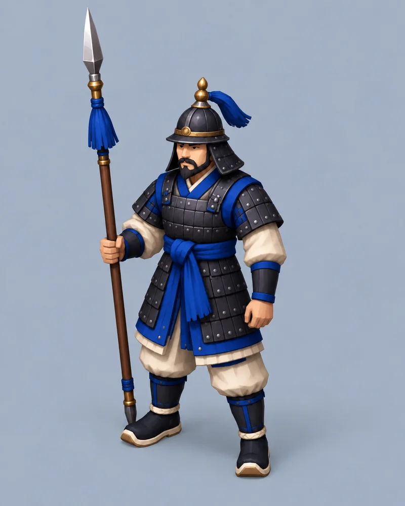
3D 변환용 콘셉트 · 클릭하여 원본 확대
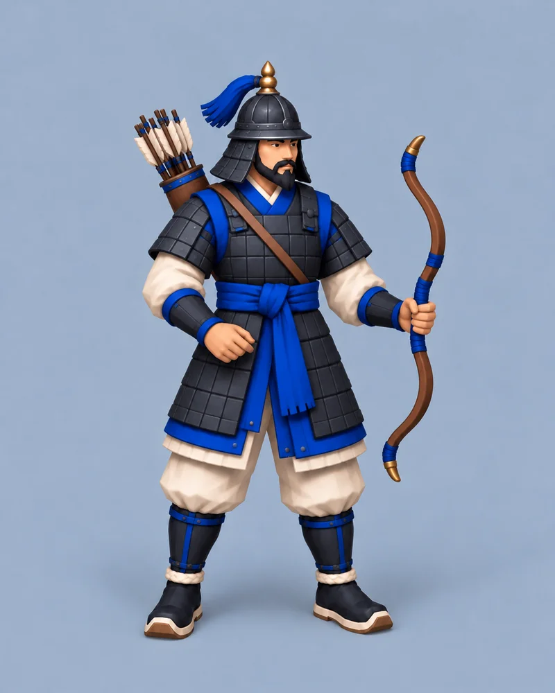
3D 변환용 콘셉트 · 클릭하여 원본 확대
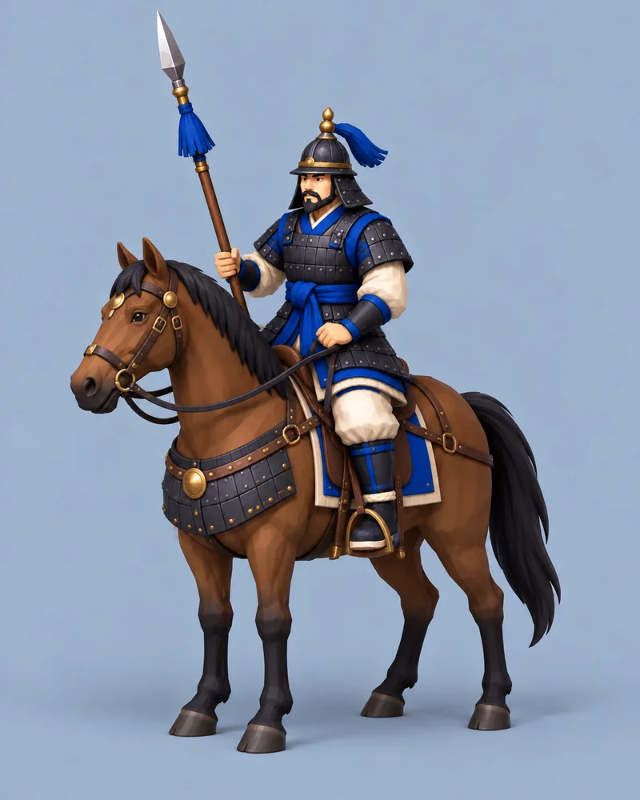
3D 변환용 콘셉트 · 클릭하여 원본 확대
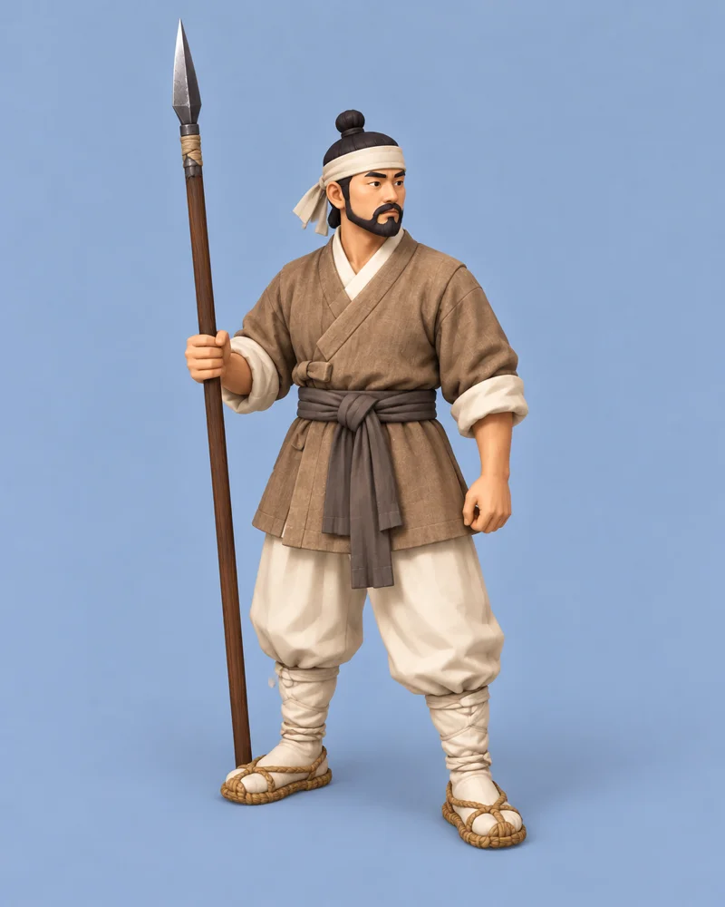
3D 변환용 콘셉트 · 클릭하여 원본 확대
일본군 — 붉은 갑옷, 그리고 총병
일본군은 붉은색과 검은색의 대비, 넓게 퍼지는 투구와 갑옷의 형태를 기준으로 삼았다. 창병·궁병·기병이 무장을 바꾸어도 같은 시리즈로 보이도록 맞추고, 한국군이나 중국군 옆에 섰을 때는 다른 실루엣이 읽히게 하는 방향이다.
일본의 고유 특수병은 총병으로 잡고 있다. 긴 총신과 총을 든 자세가 활을 든 병사와 분명히 달라 보이게 했다. 이번 병종 구성에서는 총병을 일본 고유의 선택지로 소개한다. 여기서 말하는 구분은 역사 전체에 대한 단정이 아니라, EASTWAR 안에서 각 군대의 개성을 만들기 위한 게임 설계다.
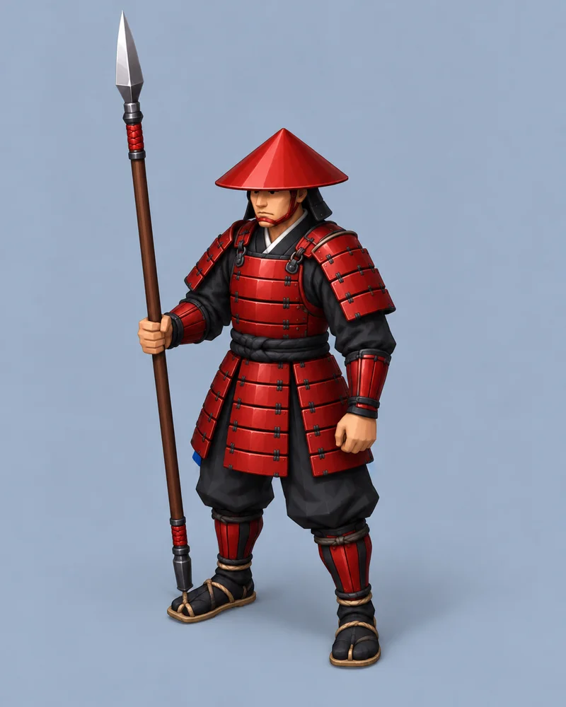
3D 변환용 콘셉트 · 클릭하여 원본 확대
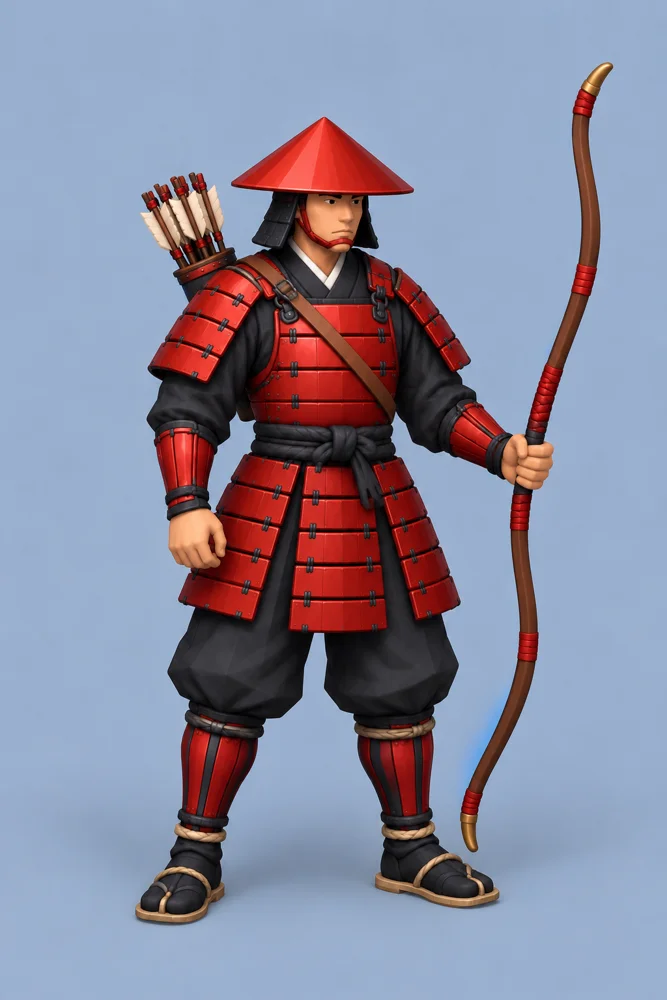
3D 변환용 콘셉트 · 클릭하여 원본 확대
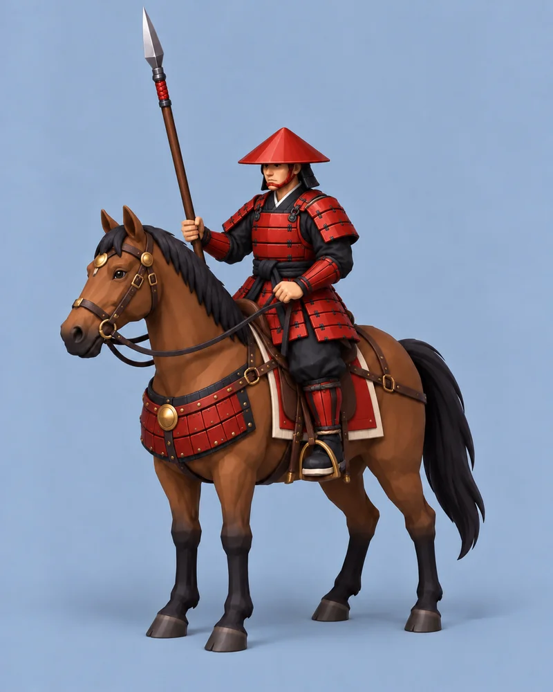
3D 변환용 콘셉트 · 클릭하여 원본 확대
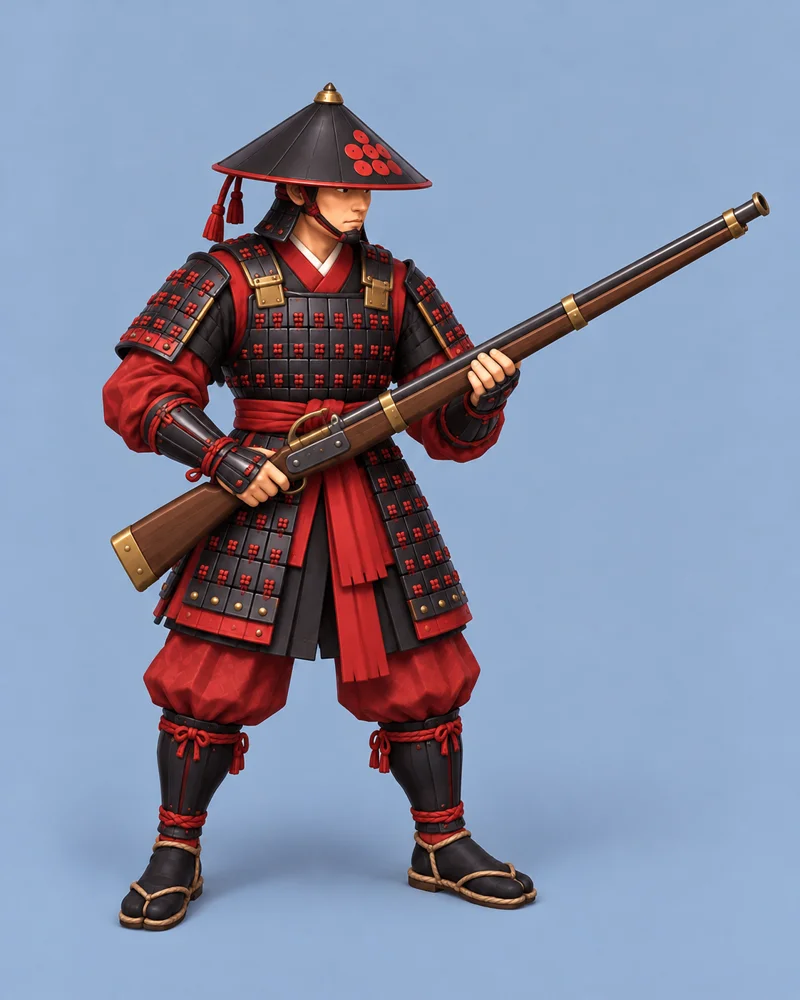
3D 변환용 콘셉트 · 클릭하여 원본 확대
중국군 — 녹색 갑찰과 연노의 형태
중국군은 짙은 녹색과 청동빛 테두리, 층을 이룬 갑옷과 투구를 중심으로 묶었다. 창병에서 정한 인상을 궁병과 기병으로 이어가고, 특수병도 같은 군대에서 나온 병사처럼 보이게 했다.
중국의 고유 특수병은 연노병이다. 보통 활과 구별되는 가로 활대, 위쪽 화살 적재부, 작동 레버가 핵심이다. 부품을 무작정 정교하게 그리는 것보다 작은 화면에서도 일반 궁병과 다른 무기를 들고 있다는 사실이 보여야 한다. 동시에 나중에 입체로 바꿨을 때 구조를 정리할 수 있도록, 복잡하고 가느다란 요소는 줄이는 쪽으로 기준을 잡았다.
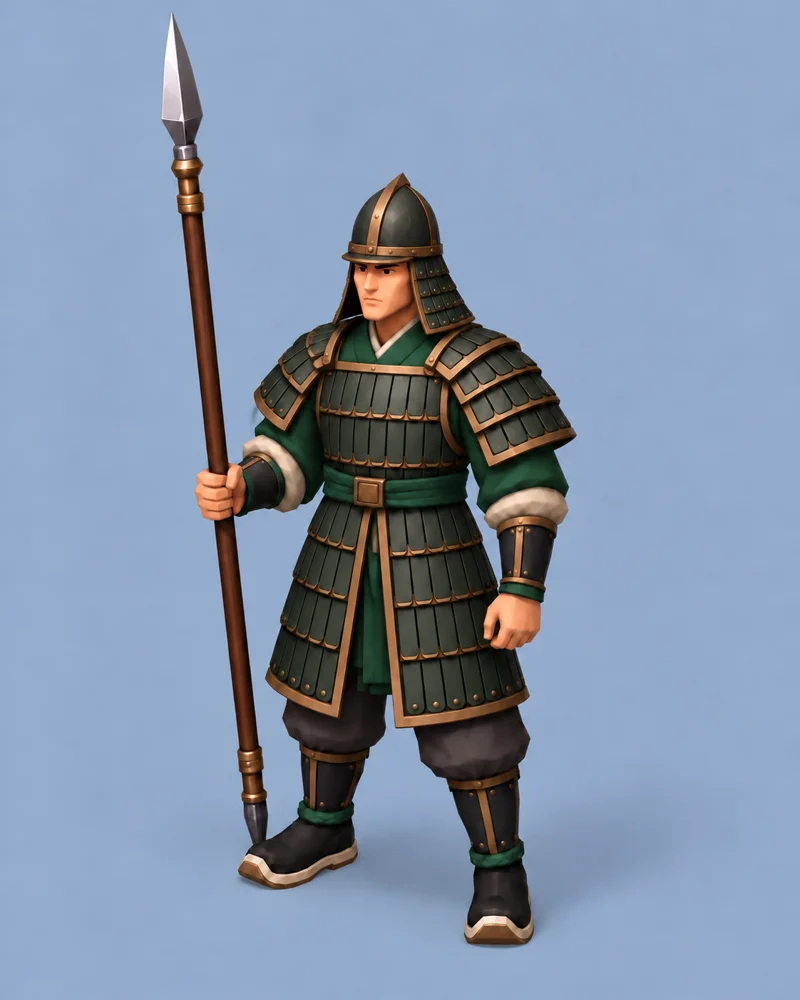
3D 변환용 콘셉트 · 클릭하여 원본 확대
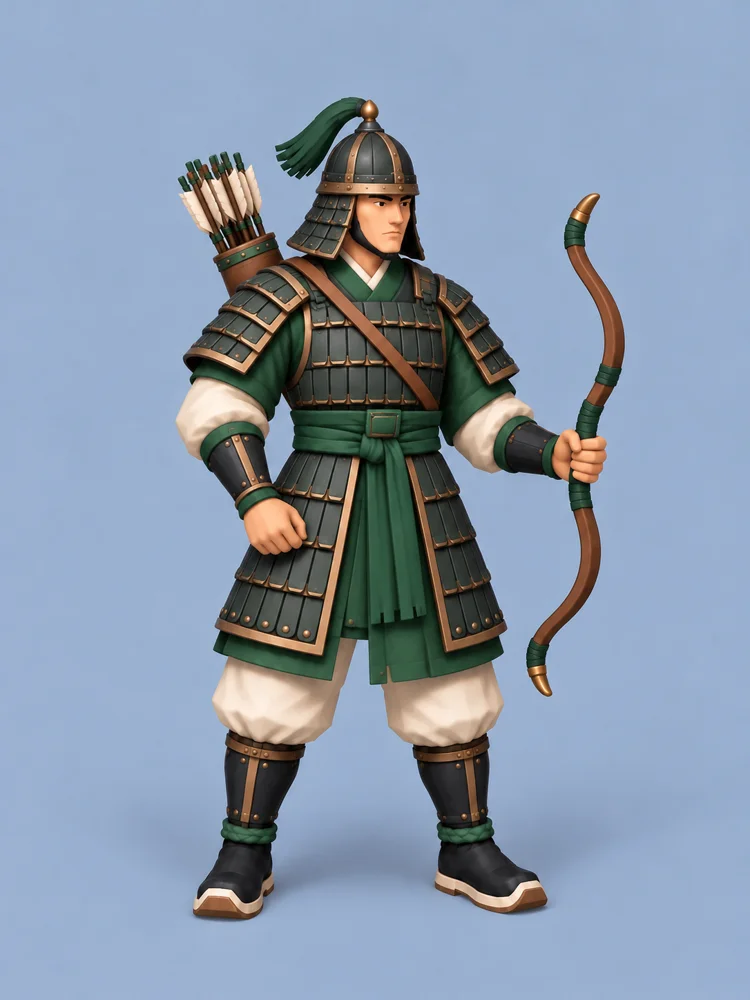
3D 변환용 콘셉트 · 클릭하여 원본 확대
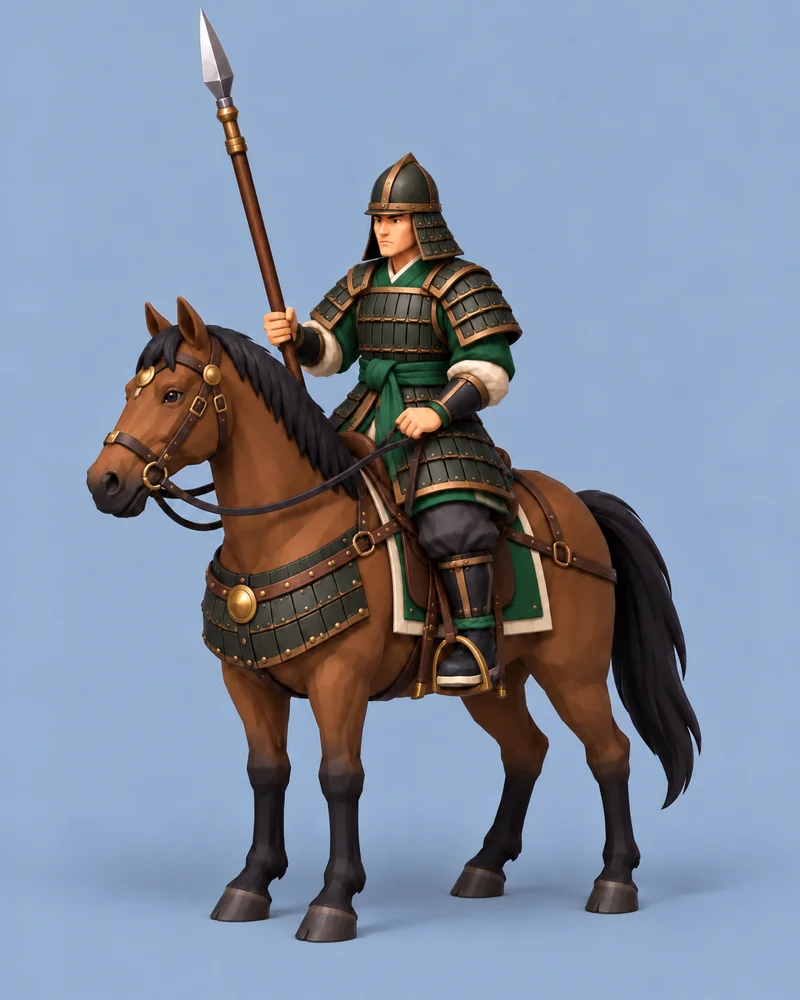
3D 변환용 콘셉트 · 클릭하여 원본 확대
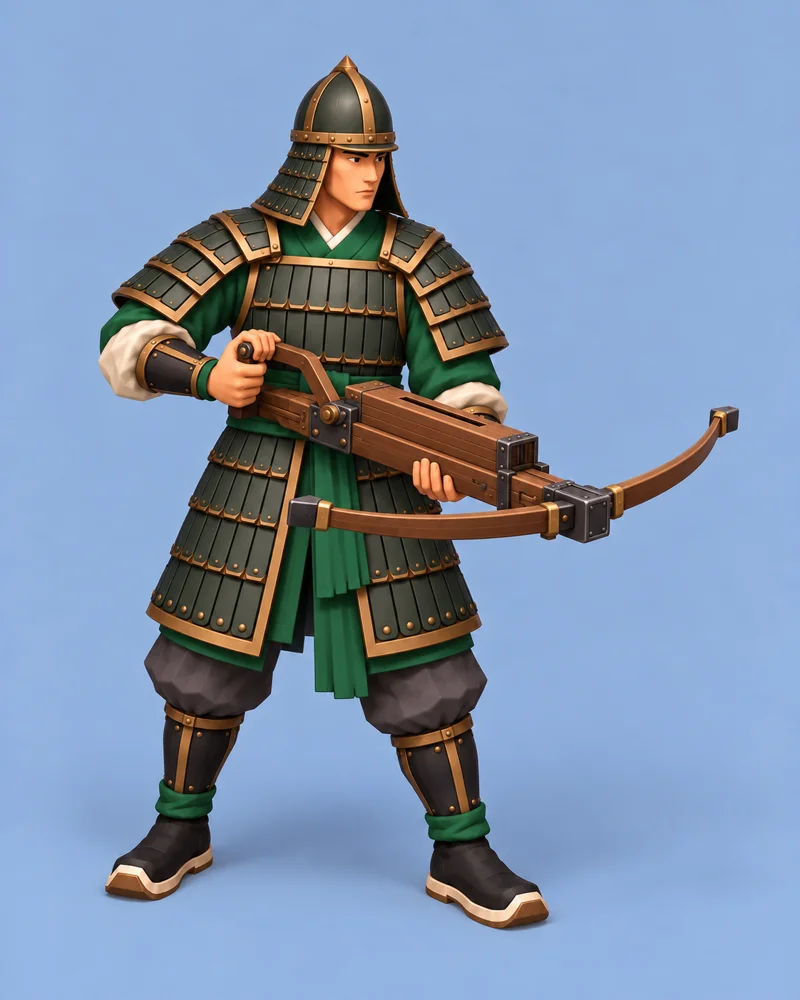
3D 변환용 콘셉트 · 클릭하여 원본 확대
몽골군 — 말과 활이 하나의 정체성
몽골군은 한·중·일과 같은 병종 구성을 반복하기보다 궁기병 중심으로 생각하고 있다. 말 위의 기수, 짧은 활과 화살통이 한 덩어리로 읽히는 모습이다. 일반 기병의 창을 그대로 들려주는 대신, 말과 활의 조합 자체가 몽골군의 특징이 되게 했다.
기마 유닛은 특히 실제 전장에 올려봐야 할 것이 많다. 말의 크기만 줄이면 기수와의 비율이 어색해질 수 있고, 자연스러운 비율을 지키면 한 칸에 여러 기를 놓았을 때 복잡해질 수 있다. 그래서 보기 좋은 한 장에서 멈추지 않고, 부대 단위로 배치했을 때도 읽히는지 확인해야 한다.
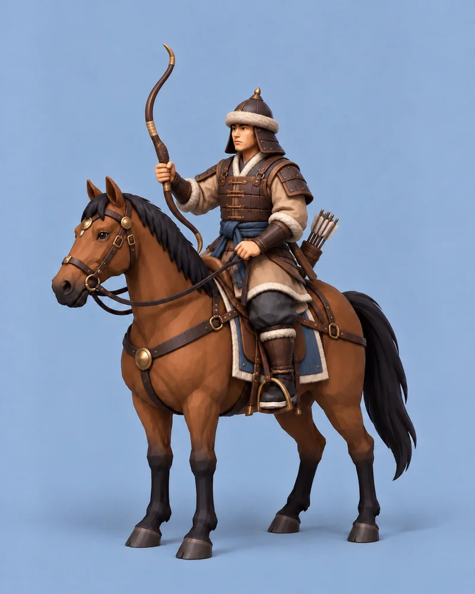
3D 변환용 콘셉트 · 클릭하여 원본 확대
이미지에서 3D로, 그리고 실제 화면으로
다음은 이 유닛 이미지를 바탕으로 Tripo AI 같은 도구를 통해 3D 후보 모델을 만들어보는 단계다. 그 결과를 Blender에서 살펴보고 형태와 재질, 움직임에 필요한 부분을 정리한 뒤, Godot 전장에 넣어 테스트하려고 한다.
변환 버튼을 눌러 입체가 나왔다고 바로 게임용 유닛이 완성되는 것은 아니다. 손과 무기가 자연스럽게 붙어 있는지, 말과 기수가 어색하지 않은지, 이동하거나 방향을 바꿀 때 문제가 없는지 봐야 한다. 여러 부대를 동시에 배치했을 때 화면이 잘 읽히는지, 성능을 감당할 수 있는지도 실험 대상이다.
그래서 오늘의 이미지는 3D 전환 성공을 보여주는 결과물이 아니라, 실제로 바꿔보고 적정성을 판단하기 위한 출발점이다. 최종적인 게임 적용 여부는 Blender와 Godot에서의 테스트를 거쳐 결정할 생각이다.
아직 세 가지 길을 열어두고 있다
2026년 10월 20일 현재, 표현 방식은 세 가지 안을 놓고 고민하고 있다.
- 전장과 유닛을 모두 3D로 만든다. 지형과 병사가 함께 입체가 되는 방향이다.
- 전장은 2D로 두고, 유닛만 3D로 만든다. 지금 전장의 2.5D에 가까운 느낌을 유지하면서 병사에게 입체감과 움직임을 더하는 방향이다.
- 전장과 유닛을 모두 2D로 유지한다. 현재의 2.5D 느낌을 더 살려 화면의 깊이와 표현력을 끌어올리는 방향이다.
지금 가장 우선으로 생각하는 것은 두 번째, 2D 전장에 3D 유닛을 넣는 방식이다. 기존 전장의 느낌을 살리면서 병사들의 움직임을 입체로 더해보는 조합이다. 다만 이것도 아직 최종 확정은 아니다. 2D 배경과 3D 병사의 시점, 크기, 빛과 그림자가 어울리는지는 직접 올려봐야 알 수 있다.
테스트를 해보니 모두 3D인 쪽이 더 좋을 수도 있고, 지금의 2D 표현을 더 다듬는 편이 게임에 맞을 수도 있다. 중요한 것은 3D라는 이름을 붙이는 일이 아니라, 전장이 더 잘 보이고 플레이하기 좋아지는가다. 오늘은 그 판단에 쓸 병사들의 모습을 준비했다. 다음에는 이들이 실제 전장에 섰을 때 어떤 모습일지 확인해보려 한다.